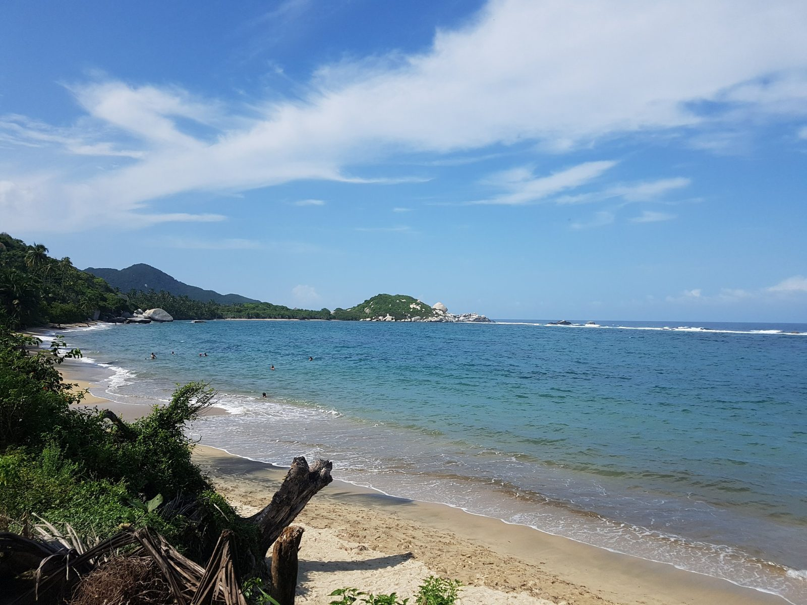

Colombia · Santa Marta · Tayrona
Tayrona National Park in 2026: what to check before you go, and what the trek was like
I walked through Tayrona National Park on November 25 and 26, 2017, with a night in a tent. That was nine years ago, so this is partly what I remember and photographed, and partly what I checked again in November 2026. The checked facts are marked with a source and a date.
The trek
I took a bus from the Santa Marta area, paid the entrance fee, and walked in with another traveller. I do not remember the price or where the bus left from, and I do not have a ticket. We walked along the coast, from one beach to the next, between about 12:00 and 13:30. The path passes beaches with large grey boulders, small river mouths and viewpoints over the sea. We slept in a tent at the camping area, and left early the next morning.


On the morning of the 26th, near the camping area, I filmed what I took to be a very large crocodile in the sea and a very large snake in a tree. I cannot tell you the species from my videos. The point is that this is a wild place, and the animals are close to the paths.
What to check before you go (November 2026)
- The price. For 2026, a foreign visitor who is not a resident of Colombia or a member of the Andean Community pays 81,000 pesos in the low season and 96,500 pesos in the high season, and 43,500 pesos for the Bahía Concha sector. The rates took effect on January 1, 2026 (Infobae, January 6, 2026). A Colombian travel blog gives lower, "estimated" figures of 73,500 and 87,000 pesos, so I would trust the news report, which cites the official resolution, and confirm at the gate.
- Closures. The park closes for short periods every year. For 2026 the dates were February 1 to 15, June 1 to 15, and October 19 to November 2 (same Infobae article). The February closure was described as a planned pause so the land can rest and Indigenous communities can hold traditional practices (RCN, January 31, 2026). I could not confirm that the same dates repeat in other years, so check before you book anything.
- Hours and getting there. One blog (Calendario de Colombia, April 24, 2026) gives 8:00 to 17:00 at the El Zaino and Calabazo entrances, advises arriving before 9:00, and says the ticket offices close when the daily limit is reached. It says buses to El Zaino leave from the public market in Santa Marta and take about two hours, and that boats run to Cabo San Juan from El Rodadero or the Taganga pier, depending on the swell. It is a blog, not the park, so verify the hours.
- Extra costs and rules. The same blog lists a compulsory insurance of about 6,000 pesos a day, no cash machines inside the park, an original ID document at the entrance, and a ban on single-use plastics.
- Swimming. The blog says swimming is prohibited at Arrecifes and Cañaveral because of dangerous currents, and that you should respect the flags. In 2016 the park's head advised against swimming at beaches closed to visitors, since many have caimans (El Heraldo, November 4, 2016).
- Animals. On September 20, 2026, a large caiman walked across a beach in the park while people were sunbathing, and the visitors stepped back and let it pass (Vanguardia, September 21, 2026). The park's advice is to move away and keep your distance.
- Camping and cabins. The blog mentions camping and hammocks at Arrecifes and Cabo San Juan, and cabins at Cañaveral, with no prices. I could not find a current price, so ask at the park or when you book.
- Health. The blog recommends the yellow fever vaccine at least 10 days before the trip, and says it is not compulsory.
What I could not check
The park authority's own website would not open for me, so I could not confirm the hours, the entrance rules or the camping prices at the source. I also do not know what I paid in 2017. Treat the blog figures as a guide and confirm them with the park before you travel.
Is it worth it?
For me, yes. The beaches and the walk are beautiful, and a night in a tent gives you the early morning almost alone. But go with the right expectations: it is hot, you carry what you need, and there are real wild animals. Do not swim where it is forbidden, and keep your distance from anything large.
The full chapter, with all my photos and three short videos from the morning, is in Members.